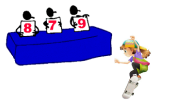

En esta actividad realizamos una encuesta a los alumnos de las carreras de la UTTT, específicamente de contaduría, Química, procesos industriales y mecatrónica. El objetivo de esta actividad es mostrar los datos recabados para poder interpretarlos con gráficas y realizar cálculos de Medidas de Tendencia Central (Moda, Mediana y Media).

Medidas de tendencia central